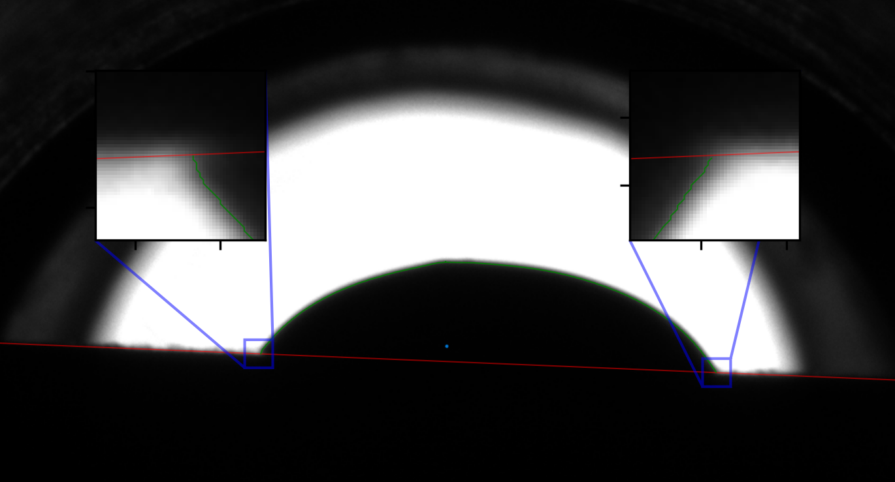
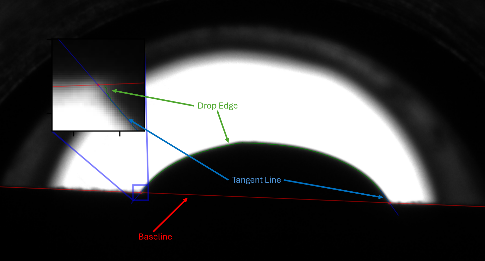

Usage¶
Installation¶
Currently, to install the package, the github repository must to be cloned. To do this:
Open a terminal and navigate to the directory you wish to install the package in. It is recommended that this be a new directory with a clean virtual environment.
Copy the following commands into your terminal, this will clone the repository.
git clone https://github.com/mcnichon/edgefinder.git
NOTE: More detailed instructions pertaining to cloning github repositories can be found here
Navigate to the repository’s directory, which should contain a
pyproject.tomlfile.From this repository copy the following code into your terminal to install the package and all dependencies:
pip install .
Verify that the package and dependencies have been installed with:
pip list
To utilize the code within a python workspace, one must add the following to their code. The package alias can be whatever the user wants, here ef is used.
import edgefinder.edgefinder as ef
Currently there exists no support to install the package with PyPi.
Example Problems¶
Two example problems are provided in the repository Example_Single_Image.py and Example_Multiple_Images.py, located in the Examples directory. The first example analyzes a single image utilizing all package functions except ef_full_analysis. A snippet pertaining to the edgefinder functionality is provided below:
image_test = Image.open(r"Example_Images/Example_Image_2.png")
#Functions from package
image_crop= ef.ef_crop(image_test)
image_subpixel = ef.ef_subpixel(image_crop)
image_baseline, image_baseline_coe = ef.ef_baseline(image_subpixel)
image_edge_l, image_edge_r = ef.ef_drop_edge(image_subpixel, image_baseline)
image_tan_l, image_tan_r, intersection_l, intersection_r, image_angle = ef.ef_angle_tan(image_subpixel, image_edge_l, image_edge_r, image_baseline_coe)
First, an image needs to be opened utilizing the Pillow Image class, which is done with the first line of code provided in the snippet.
The remaining code contains edgefinder specific functions whos functionality will be explored.
ef.ef_crop converts the image to greyscale and then an np.array that contains the pixel light intensity values (0-255, with 0 and 255 being black and white respectively). Within this array, the ‘illuminated region,’ defined by the threshold_light variable, with a default value of 200, is found. The minimum and maximum xy locations combined with the offset variable are then used to define the region where the image will be cropped. Offset defines a number of pixels in the conservative (making image larger) direction to subtract/add to the min/maximum pixel locations.
{kind=link}
ef.ef_subpixel linearly interpolates between all points in the image matrix, artificially increasing its resolution.
ef.ef_baseline finds the baseline of the sample stage (red). It does this by iterating through each row of the pixel array until it the pixel value reaches the threshold_dark value, with one y location per column being recorded (green). A linear interpolation is applied to a specified number of xy locations taken from this array (blue), specified by bl_fit and bl_ignore. These pixels start at the column corresponding to the edge of the ‘illuminated’ region as described above.
{kind=link}
ef.ef_edge finds the left and right edge of the droplet, as defined by the threshold_dark value. This analysis starts bl_offset pixels above the baseline at the ‘middle’ of the drop, approximated by the middle of the green line from ef.ef_baseline. This point is denoted by the blue dot in the image below. From this point, left and right pixel intensity values will be evaluated until passing the threshold_dark value, after which, the process will repeat in the row above. If the pixel in the row above the midpoint is greater than the threshold, we know we have reached the top of the droplet. To account for angled baselines, a similar process is taken starting at the above found edge, not the center. On both the left and right side, pixels will be evaluated until passing below the baesline. This can be seen in the expanded view in the picture below, where the edge of the drop (green) stops at the baseline (red).
NOTE: Expanded views are flipped due to the differences in origin locations of plots and images. Images are displayed with the (0,0) at the upper left.
{kind=link}
ef.ef_tan finds the tangent line next of the droplet where it touches the baseplate. Similar to the baseline, the points used for this linear interpolation are defined by the tan_fit and tan_ignore variables and taken from the ef.ef_edge ‘edge location’ matrix. In addition, matrix math between the tangent line and baseline is performed to calculate the contact angle of the drop.
An annotated example of the results from these functions is provided below.
{kind=link}
All functions have default values pertaining to fitting parameters and can be finetuned by the user. The default values provided produce good results on the example images.
The second example, Example_Multiple_Images.py shows how thispackage might be applied to folders with more than one image.
Within these two examples, the function ef.ef_full_analysis is not used. This function is intended to simplify the entire process, combining all previously described functions into one, outputting only an angle. Thus, if one wishes to plot any of the results other than angle, the above process should be taken.